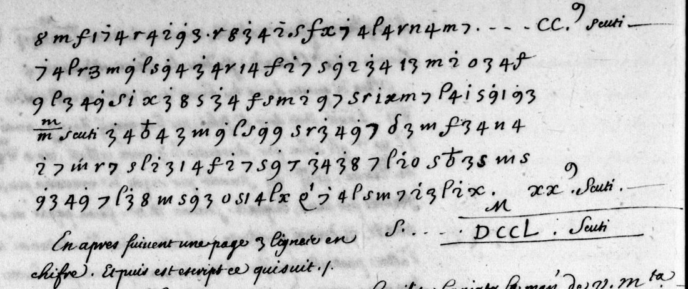

At a glanceCiphertext-only break · partial (96% of the cipher)
- The letter
- A ciphered account of Cardinal Wolsey’s assets, in a letter from London to Francis I of March 1530 attributed to Giovan Gioacchino da Passano.
- Where
- An eighteenth-century copy, BnF Clairambault 331 f. 157. The copyist omitted a page and three lines of the original cipher; they are outside the percentage.
- The cipher
- A letter substitution in which a dot over a sign makes it a different letter.
- How it was read
- Key recovered from the ciphertext alone after a new transcription that kept the dots and separated straight strokes from curved numerals. No key, decipherment or parallel text was found. A token audit counts 386 (96.0%) as coherent Italian after thirteen listed emendations.
- What it says
- Wolsey’s wealth “in denari contanti”, gold and silver vessels and household goods; the last passage names Winchester, St Albans and York. Five signs once taken for clear “in summa” give un ann, completing un anno.
- Still open
- Three rare signs and a financial junction. All values are inferred; there is no contemporary key to check them against.
01 What survives
The copy's heading dates a letter to the king and its accompanying letter for the Grand Master to 15 March 1530. The sender is attributed to Giovan Gioacchino da Passano, the French agent in London; this is not a decrypted signature. The predominantly clear Italian body discusses English affairs and recovering payments and quittances from Wolsey. The cipher account precedes the royal letter's valediction.
There are sixteen physical cipher lines: an introduction, six short listed items, and a longer final financial passage. Seven amounts stand in the right margin. The earlier description of “nine entries” came from provisional transcription blocks and should not be mistaken for the manuscript's line count. The reference at the head appears to be “Vol. 79, fol. 78”; its modern shelfmark has not been established.

02 The Italian decipherment
Spacing, punctuation and u/v display are editorial. All key values are I (inferred); none is taken from a contemporary key or parallel plaintext. M marks uncertainty. The three labels below preserve signs that are not letters of the alphabet: [D] is identified below from context as the Cardinal, [Q] as the King, and [S2] may be a royal title. These context readings are not counted as decoded words.
Sapera vostra magesta che questo [S2] de gli beni del [D], per quanto si dice, son pervenuti circa [clear amount], in l'infrascrite par[u?]tite, cioe:
The opening expressly qualifies its report: “according to what people say.” The source has parutite; partite is likely intended, but the extra stroke is retained as a doubt. No missing preposition or royal title is silently supplied.
| Recovered entry | Established sense | Clear numeral component |
|---|---|---|
| In denari contanti | Ready cash | CL |
| In crediti de so [D] per [Q] interditi et poi levati | Credits; restriction and subsequent recovery, with agency unresolved | L |
| Per gli fruti de un anno de lo intrate de so [D] | One year's revenues; the reference to [D] remains abbreviated or uncertain | LX |
| In baghe circa | Probably jewels or rings, approximately | XX |
| In vasele d'oro et d'argento | Gold and silver vessels | CCL |
| In supelectili de casa per el meno | Household furnishings, at least | CC |
The amounts in the right margin are written as a Roman numeral, a raised sign like a small 9, and Scuti: CL, L, LX, XX, CCL and CC here, XX after the final passage. The raised sign stands for m, thousands: the total at the foot is DCCL with M written over it, the introduction’s round figure is DCCC with m over it, and the seven components add up to exactly DCCL.
Context readings of the three signs (30 September 2026). [D] occurs four times, always where a masculine person is named: de gli beni del [D], crediti de so [D], intrate de so [D], and al deto [D] insieme con lo arcivescoato de Diorch. The clear text a few lines above the cipher speaks of “el predetto Cardinale”, and al deto [D] echoes it; the account deals with Winchester, St Albans and York, the three benefices Wolsey held until February 1530, when he kept York and gave up the other two. [D] is taken as [Cardinale], grade I. [Q] occurs twice: the credits were per [Q] interditi et poi levati, and after the deduction for the Cardinal havera [Q] per ano circa XX[m] scuti. The XX of that last clause is one of the seven sums that make up the DCCL gathered in by questo [S2], so [Q] is the party that received the goods: [il Re], Henry VIII, grade I. [S2] (once, “questo [S2]”) is the cipher sign for a with a raised stroke; questo [Re] or questo [Signor] (the copyist writes a raised r in the same way in S.ria) both fit, and it is left open. The literal so before [D] is kept; it may be the northern so, “his”. With these readings the first part of the account runs without a gap:
… de gli beni del [Cardinale], per quanto si dice, son pervenuti circa DCCC[m] scuti in l'infrascrite partite, cioe: in denari contanti CL[m] scuti; in crediti de so [Cardinale] per [il Re] interditi et poi levati L[m] scuti; per gli fruti de un anno de lo intrate de so [Cardinale] LX[m] scuti; in baghe circa XX[m] scuti; in vasele d'oro et d'argento CCL[m] scuti; in supelectili de casa per el meno CC[m] scuti.
“… of the goods of the [Cardinal], as it is said, about 800 [thousand] scudi have come in, in the items below, namely: in ready money, 150 [thousand] scudi; in credits of the [Cardinal], sequestered by [the King] and then collected, 50 [thousand]; for the fruits of one year of the revenues of the [Cardinal], 60 [thousand]; in jewels, about 20 [thousand]; in gold and silver plate, 250 [thousand]; in household furnishings, at least 200 [thousand] scudi.” The sums stand in the margin in clear; partite is the copy’s parutite without its extra stroke.
The final passage continues across the verso. Its emended letter reading is:
Per l'intrate del vescoato de Vinchiestri et abadia de sancto Albano, rebatuti [stacked clear notation, scuti] dese intrato al deto [D] insieme con lo arcivescoato de Diorch, asignati et ordinati, havera [Q] per ano circa [XX + abbreviation, scuti].
Winchester, St Albans and York are identifiable. Rebatuti means deducted; the signs do not support restituti, restored. The literal dese is an attested regional word for ten, but its connection with the stacked monetary notation and intrato is not secure. The passage concerns revenues, a deduction, and assigned annual income; a precise translation of who receives which sum would exceed the evidence.

The seven right-margin Roman components sum exactly: CL + L + LX + XX + CCL + CC + XX = DCCL (750). The apparent thousand multipliers suggest 750,000 scudi, compared with the introduction's approximate 800,000. This scale remains an interpretation of the notation. The inline stacked amount is not an eighth right-margin entry; its role is unsettled. The list mixes assets and revenues.
03 Why the second attempt worked
The earlier transcription merged significant dots and inconsistently classified numeral-like strokes. Several substitution searches therefore failed, although their synthetic controls worked. A fresh dotted inventory of 397 signs and 28 aliases gave connected Italian under a seeded many-to-one four-gram annealer. A frequency penalty was necessary: without it the model preferred repeated i. The shared model was it-cinquecento; no target plaintext was supplied.
The recurring distinctions include 3=i / 3d=d, 7=o / 7d=p, 8=i / 8d=q, 9=o / 9d=t, and S=a / Sd=g. The suffix d marks the dot; it is part of the same cipher sign. Linguistic extension and image checking established further values. Some apparent homophones may instead be the copyist's variants. Recognizing 1 m S m m 7 as un anno restored five previously excluded cipher signs.
The final 402-token inventory has IC 0.0602. It happens to equal the old transcription's token count but differs in segmentation and sign classes. The independent-looking place names, repeated words, ordinary Italian clauses and sum of the numeral components provide internal checks. They do not amount to an independent contemporary decipherment.
04 What remains open
- Three rare sign types:
Dfour times,Qtwice,S2once.D= the Cardinal andQ= the King are context readings (grade I, above), not key values;S2is open between a royal title and Signor. - The two so [D] expressions, the extra stroke in parutite, and the four-letter dese financial junction. These nine additional tokens are excluded from coherent coverage.
- Thirteen local contextual emendations, mostly misplaced or missing dots, are individually listed in the key and token audit. They are included in the 96.0% measure; the literal, uncorrected output is also supplied.
- A page and three lines of original cipher, expressly omitted by the historical copyist. No token count or decipherment is available. The extent figures apply to the surviving account only.
All sixteen extant lines and every residual occurrence were rechecked. The nearby cipher and the Ferrara Passano/Sormano material have different inventories. No matching key or complete parallel copy was found. The related printed Passano report, Letters and Papers IV no. 6307, is dated 4 April 1530 and cannot validate this March account. An original or independent complete copy is the next evidence needed; further confident expansion from this short text alone would be conjecture.
The exact audit is 395/402 assigned, 386/402 coherent, 16 M tokens, 13 emendations. These are reproducible counts of editorial judgments; the token accuracy is not independently known. The full reading and apparatus, the reconstructed key, and the token audit make each decision reviewable.
Full texts
The transcription and the decryption of every document on this page, so that the reading can be used and checked. Short files are shown here; all are in the repository.
BnF Clairambault 331 f. 157r-v, 15 March 1530 read in part
Ciphered account in a copied letter to Francis I attributed to Giovan Gioacchino da Passano, London, 15 March 1530: it lists Cardinal Wolsey's ready cash, credits, one year's revenues, jewels, gold and silver vessels and household furnishings, and names Winchester, St Albans and York. The copyist left out a further page and three lines of cipher.
Builds coherent sentences, but under the read bar of 95% of words read as sense (91% here); the holes are marked in the reading.
Transcription
# Independent recheck 2026-09-23. d suffix = visible dot above sign. # P = narrow looped upright; L = open tall loop; Q = broad loop; D = uncrossed delta; T = crossed delta. # Straight strokes are 1, curved 2 forms are 2; no i alias. S = low s-like curve. # Line breaks follow manuscript. Blank lines separate the previous attempt's units. # Superscript 2 attached to S in line 1 is S2, not a separate baseline token. # Final observed inventory adds the five signs previously called plain in summa: 1 m S m m = un ann. # Dots may be misplaced by the copyist; transcription is provisional, not a key. F x 7d 4 P S 1 7 F 9d P x n S Sd 4 F 9 S 2d 0 4 8d 1 4 F 9d 7 S2 3d 4 Sd r 3 1d 4 m 3 3d 4 r D 7d 4 L 8d 1 S m 9 7 L 3 3d 8 2d 4 F 2 m 7d 4 P 1 4 m 1d 9d 8 2d 3 L 2d x 3 m r 3 m 4d P S F 2d P 3 9d 4 7d S L 1 9d 8 9d 4 2d 3 7 4 8 m 3d 4 m x L 3 2d 7 m 9d x m 9d 3 3 m 2d P 4 3d 8 9d 3 3d 4 T 7 D 7d 4 L Q 8 m 9d 4 P 3d 8 9d 3 4 9d 7d 2 3 r 4 1 S 9d 3 7d 4 P Sd r 3 4d P 1 9d 3 3d 4 1 m S m m 7 3d 4 r 9 8 m 9d P Sd 9d 4 3d 4 T 7 D 8 m 1d S Sd 0 4 2d 3 L 2d x 3 m 1 S T 4 r 4 3d 7 L 2 4 9d 3d S P Sd 4 m 9d 7 8 m F 1 7d 4 r 4 2d 9d 3 r 8 3d 4d 2d S F x 7d 4 P 4 r n 4 m 7 7d 4 P r 3 m 9d P S 9d 4 3d 4 r 1 4 F 2d 7 S 9d 2 3d 4 1 3 m 2d 0 3 4 F 9 P 3 4 9d S 1d x 3 8 S 3d 4 F S m 2d 9 7 S r 1d x m 7 P 4 1d Sd 9d 1 9d 3 3d 4 T 4 3 m 9d L S 9d 9 S r 3d 4 9d 7 D 3 m F 3d 4 n 4 2d 7 m r 7 S P 2d 3 1 4 F 2d 7 S 9d 7 3d 4 3d 8 7 P 2d 0 S T 3 S m S 9d 3 4 9d 7 P 3d 8 m S 9d 3 0 S 1 4 L x Q 7d 4 P S m 7 2d 3d P 2d x
Decryption
# The surviving ciphered account: edited reading
BnF Clairambault 331, letter beginning f. 156r; cipher on f. 157r–v, Gallica canvases f149–f150. Read on 23 September 2026. The heading dates the copy 15 March 1530; the sender is attributed to Giovan Gioacchino da Passano. The body addresses Francis I. The page also contains a subsequent letter for the Grand Master.
**This is a reconstructed reading, with explicit gaps and emendations, not a contemporary decipherment.** The account is substantially read; it is not a claim to have recovered the omitted continuation or every word. Run `python targets/joachim1530/decode.py` to regenerate the literal reading, the edited unspaced reading, the 402-row audit, and the coverage figures.
## Conventions and coverage
- `[S2]`, `[D]`, `[Q]` preserve three rare signs whose expansions are not established. `[D]` probably refers to Wolsey; `[S2]` may be a royal title. These contextual identifications are **not** entered as solved key values.
- Italicized editorial comments and punctuation are not encrypted words. Spacing below is editorial. u/v is displayed as v where appropriate; the decoder retains u.
- All established values are **I**, inferred from the ciphertext; none is H (historical key) or C (independent known plaintext). **M** marks residual uncertainty. Thirteen local substitutions are listed by exact line and position in `key.json` and `reading_tokens.tsv`; most concern displaced or missing dots.
- 402 observed tokens, 28 aliases; **395/402 assigned (98.26%)**, **386/402 coherent on the conservative audit (96.02%)**. The 16 excluded tokens comprise seven rare-sign occurrences, four letters in the two `so [D]` expressions, the four-letter `dese` financial junction, and one apparent extra stroke in `parutite`. This is an editorial measure, not an independently measured cryptanalytic accuracy. The 13 emendations are included in coherent coverage and exposed individually.
- The final 402 count is coincidentally the same as the old transcription's count. It is a different segmentation and inventory. The first fresh dotted transcription had 397 tokens; recognizing `1 m S m m` as encrypted `un ann` added five. The old file had wrongly called it clear “in summa.”
## Italian reading, in manuscript order
**Introduction, f. 157r, lines 1–3**
> Sapera vostra magesta che questo [S2] de gli beni del
> [D], per quanto si dice, son pervenuti circa **[clear amount: m over DCCC, scuti]**,
> in l'infrascrite par[u?]tite, cioe:
The literal third line has `parutite`; *partite* is the likely intended word, but the extra stroke is kept outside the coherent count. The opening's syntax and royal-title expansion are not silently repaired by supplying an “a” or a verb. The gist is a report, expressly qualified by “per quanto si dice,” about goods associated with the person `[D]`.
| Entry | Edited Italian | Clear numeral component |
|---|---|---|
| 1 | In denari contanti | CL, followed by a raised abbreviation, scuti |
| 2 | In crediti de so [D] per [Q] interditi et poi levati | L, raised abbreviation, scuti |
| 3 | Per gli fruti de un anno de lo intrate de so [D] | LX, raised abbreviation, scuti |
| 4 | In baghe circa | XX, raised abbreviation, scuti |
| 5 | In vasele d'oro et d'argento | CCL, raised abbreviation, scuti |
| 6 | In supelectili de casa per el meno | CC, raised abbreviation, scuti |
`so [D]` is literal; an abbreviated reference to the person is plausible but not expanded. `baghe` is kept as written, tentatively jewels/rings in this asset list. `vasele` means vessels and `supelectili` household furnishings. `per el meno` is “at least.” `interditi` is the recovered word; the precise legal meaning and agency of `[Q]` remain unsettled.
**Final passage, f. 157v, lines 2–6**
> Per l'intrate del vescoato de Vinchiestri et abadia de sancto Albano, rebatuti
> **[clear stacked m/m-like notation, scuti]** dese intrato al deto [D] insieme
> con lo arcivescoato de Diorch, asignati et ordinati, havera [Q] per ano circa
> **[XX + raised abbreviation, scuti].**
The toponyms identify Winchester, St Albans and York. *Rebatuti* (“deducted”) is supported; the earlier tempting *restituti* (“restored”) is **not** the recovered word. `de Diorch` is retained, not silently changed to `de Iorch`. `asignati` is the spelling with one s. The first four letters on the middle line decode literally `dese`; this is an attested regional word for “ten,” but its attachment to the stacked notation and following `intrato` is not settled here. No precise deduction or allocation is asserted in translation.
**Bottom total:** a large M above `DCCL . Scuti`, introduced by a separate sum mark. The seven right-margin numeral components add correctly: CL + L + LX + XX + CCL + CC + XX = DCCL, or 150 + 50 + 60 + 20 + 250 + 200 + 20 = 750. Their apparent thousand multipliers suggest 750,000 scudi, versus the introduction's approximate 800,000; that scale remains an editorial interpretation of the financial notation. The inline stacked notation is not an eighth right-margin item. The list mixes property and revenue descriptions, so it must not be represented as a modern audited balance sheet.
## English rendering of the established sense
Your Majesty will learn that, according to what people say, goods of `[D, probably the Cardinal]` have come to the amount written, in the following items: ready cash; credits, with an unresolved reference to their restriction and subsequent recovery; one year's income; jewels or rings; gold and silver vessels; and household furnishings, “at least” the amount stated.
The final passage concerns the revenues of Winchester and the abbey of St Albans, a deduction whose numerical wording remains uncertain, and income assigned or ordered together with the archbishopric of York. It ends with what `[Q]` will have annually. The rare signs are left visible because substituting “king,” “cardinal,” or “he” at every occurrence would give an unwarrantedly definite account of the transfers.
## Context readings of [D], [Q], [S2] and the margin sums (30 September 2026)
Added for George Lasry's quotation list. These are context readings (grade **I**), printed in square brackets;
they are not key values and do not change the coverage figures above.
- **Margin sums.** Each amount is a Roman numeral, a raised sign like a small 9, and "Scuti". The raised sign is
taken as *m* (thousands): the foot total is DCCL with M written over it, the introduction's round figure DCCC
with m over it, and the seven components add to exactly DCCL. Written below as CL[m] scuti etc.
- **[D] = [Cardinale].** Four places, all a masculine person: "beni del [D]", "crediti de so [D]", "intrate de so
[D]", "al deto [D] insieme con lo arcivescoato de Diorch". The clear text just above the cipher on f. 157r says
"el predetto Cardinale"; "al deto [D]" echoes it. The benefices named (Winchester, St Albans, York) are Wolsey's;
in February 1530 he kept York and gave up the other two, which is what the final passage describes.
- **[Q] = [il Re].** Two places: "per [Q] interditi et poi levati" and "havera [Q] per ano circa XX[m] scuti".
That XX is one of the seven sums making the DCCL that came in to "questo [S2]", so [Q] is the receiver of the
goods, Henry VIII.
- **[S2]** (once, "questo [S2]"): the cipher sign S (a) with a raised stroke. "questo [Re]" or "questo [Signor]"
(the copyist writes a raised r the same way in "S.ria") both fit; left open.
- **so** before [D] is kept literally (possibly the northern "so", his).
Continuous reading of the introduction and the six entries with these readings (the page quotes it):
> ... de gli beni del [Cardinale], per quanto si dice, son pervenuti circa DCCC[m] scuti in l'infrascrite
> partite, cioe: in denari contanti CL[m] scuti; in crediti de so [Cardinale] per [il Re] interditi et poi levati
> L[m] scuti; per gli fruti de un anno de lo intrate de so [Cardinale] LX[m] scuti; in baghe circa XX[m] scuti; in
> vasele d'oro et d'argento CCL[m] scuti; in supelectili de casa per el meno CC[m] scuti.
("partite" = the copy's "parutite" without its extra stroke.)
## The continuation that is not present
Immediately afterwards the copyist says: “En apres suivent une page 3 lignes en chiffre. Et puis est escript ce qui suit.” A page and three lines of the original cipher have been omitted, not photographed elsewhere in this copy. The next text is the clear valediction, beginning “Sire, doppo l'haver…”, followed by the accompanying letter. The missing original passage has no available token count, is outside the 402-token denominator, and is **unread**. Recovering it requires the original or an independent complete copy.
## Source and novelty limits
The plaintext above was obtained from the manuscript signs, after the 22 September attempt had failed. No published parallel plaintext was used. *Letters and Papers* IV no. 6307 is dated **4 April 1530**, not this March letter, and cannot validate the account. Subsequent dictionary checking confirms that `dese` can mean “ten”; it supplies no parallel text for this document. The absence of a prior reading is the result of the searches recorded in NOTES, not proof that none exists.
- [Gallica, f149 (f. 157r)](https://gallica.bnf.fr/ark:/12148/btv1b9000761d/f149.item)
- [Gallica, f150 (f. 157v)](https://gallica.bnf.fr/ark:/12148/btv1b9000761d/f150.item)
- [OVI/CNR AGLIO: dese under dieci](https://aglio.ovi.cnr.it/results_f.php?ag=30&x=4)
- [Letters and Papers no. 6307, 4 April 1530](https://www.thomasmorestudies.org/wp-content/uploads/2021/01/1530_LP_4.6307.pdf)Decryption
01 saperauostramagestachequesto[S2]deglibenidel 02 [D]perquantosidicesonperuenuticirca 03 inlinfrascriteparutitecioe 04 indenaricontanti 05 increditideso[D]per[Q]interditietp 06 oileuati 07 perglifrutideunann 08 odelointratedeso[D] 09 inbaghecirca 10 inuaseledoroetdargento 11 insupelectilidecasaperelmeno 12 perlintratedeluescoatodeuinchies 13 trietabadiadesanctoalbanorebatuti 14 deseintratoaldeto[D]insieme 15 conloarciuescoatodediorchasigna 16 tietordinatihauera[Q]peranocirca
Decryption
01 saperauostramagesoachequesto[S2]deglibenidel 02 [D]perquanooridicesonperuenbticirca 03 inlinfrascriteparutitecioe 04 indenaricontanti 05 increditideso[D]per[Q]interditietp 06 oileuati 07 perglifrutideunann 08 odelointrgtedeso[D] 09 inbaghecirca 10 inuaseledoroetdargento 11 insupelectilidfcasaperelmeno 12 perlintratedeluescoatodeuinchies 13 orietabaiiadesancooalbanorebgtuti 14 deseintratoaldeto[D]insdeme 15 conloarciuescoatodediorchasiana 16 tietordinatihauera[Q]peranocdrca
Reading
# BnF Clairambault 331 f. 157r-v, Giovan Gioacchino da Passano (attrib.) to Francis I, copy dated 15 March 1530: reading Running text of the edited reading in `READING.md` (23 Sept 2026; literal decode `reading_literal.txt`, edited `reading_emended.txt`), written out 23 Oct 2026 (translation wave v7). Word division and punctuation are the edition's; letters are the decode's (u/v as v where appropriate, as READING.md shows them), except "partite" for the copy's "parutite" (an extra stroke, as READING.md notes). The amounts are clear Roman numerals in the margin with a raised sign read as *m* (thousands), written with a raised ᵐ (READING.md writes [m]). `[D]`, `[Q]`, `[S2]` are three rare code signs not established in the key; by context READING.md reads [D] as the Cardinal (Wolsey), [Q] as the King (Henry VIII), [S2] open. `[?dese]` = a word whose sense here is unsettled. The copyist omitted a further page and three lines of cipher after this passage; they are unread. ## Reading Sapera vostra magesta che questo [S2] de gli beni del [D], per quanto si dice, son pervenuti circa DCCCᵐ scuti in l'infrascrite partite, cioe: in denari contanti CLᵐ scuti; in crediti de so [D] per [Q] interditi et poi levati Lᵐ scuti; per gli fruti de un anno de lo intrate de so [D] LXᵐ scuti; in baghe circa XXᵐ scuti; in vasele d'oro et d'argento CCLᵐ scuti; in supelectili de casa per el meno CCᵐ scuti. Per l'intrate del vescoato de Vinchiestri et abadia de sancto Albano, rebatuti [m/m notation] scuti [?dese] intrato al deto [D], insieme con lo arcivescoato de Diorch, asignati et ordinati, havera [Q] per ano circa XXᵐ scuti. Somma: M DCCL scuti.
Translation
# BnF Clairambault 331 f. 157r-v, Giovan Gioacchino da Passano (attrib.) to Francis I, copy dated 15 March 1530: English translation Translation (Claude Opus 5.5, 23 Oct 2026) of `clair331_reading.md`, the reading of the cipher (key recovered from the ciphertext). Same marks: `[D]`, `[Q]`, `[S2]` are code signs not established in the key (by context [D] = the Cardinal, Wolsey; [Q] = the King, Henry VIII; [S2] open); `[?dese]` a word whose sense here is unsettled (perhaps "ten"); the amounts are clear numerals with a raised m read as thousands. A further page and three lines of cipher were omitted by the copyist and are not in the copy. ## Translation Your Majesty will learn that this [S2], of the goods of the [D], so it is said, has received about 800,000 scudi, in the items written below, namely: in ready money, 150,000 scudi; in credits of his [D], frozen by [Q] and then released, 50,000 scudi; for the fruits of one year of the revenues of his [D], 60,000 scudi; in jewels, about 20,000 scudi; in vessels of gold and silver, 250,000 scudi; in household furnishings, at the least, 200,000 scudi. For the revenues of the bishopric of Winchester and the abbey of St Albans, deducted [m/m notation] scudi [?dese] income to the said [D], together with the archbishopric of York, assigned and ordered, [Q] will have yearly about 20,000 scudi. Sum: 750,000 scudi.
Key: key.json
05 Sources and reproduction
BnF, Clairambault 331, f. 156; cipher on f. 157r and f. 157v. Prior listing: S. Tomokiyo, French ciphers in the age of Francis I (fresh access returned 503; the earlier local research and user-supplied status were retained). Related, not parallel: Letters and Papers IV no. 6307, from Le Grand III p. 412. Post-solution lexical check: OVI/CNR AGLIO, dese = dieci.
No prior decipherment was found in the material searched; this is not proof that none exists. The unsuccessful earlier attempt is retained in the repository. Run python targets/joachim1530/decode.py for both readings and the coverage audit. The seeded search and shared-model preparation script are also included.
Evidence, code and notes: targets/joachim1530/. The manuscript images remain credited to the Bibliothèque nationale de France / Gallica.